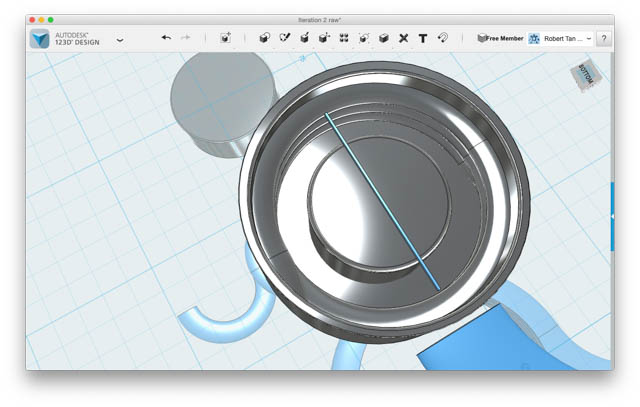

Introduction

One day I lost the cap that came with my water bottle, which possibly meant an end to the happy days of swinging around the bottle with boundless content. I first called up the seller of the bottle and asked if I could buy a replacement – the answer was no. So I decided to do the next best thing - 3D print one for myself.
1st Iteration
I have never touched a CAD program in my life, so I looked up a list of free to use, Mac compatible programs and picked the beginner-oriented Autodesk 123D Design that suited my purposes ideally. It was not only Mac compatible but also played nicely with the most popular 3D printers.
Next, I quickly learned some basic techniques through Autodesk’s YouTube channel and proceeded to make the first iteration of the cap which took me over 3 hours in total (luckily, my sister had the same bottle and was able to take measurements of the cap while I eyeballed them through Photoshop).
1st iteration CAD model. Total time, 3+ hours. I figured out the trick behind building the thread by splitting a torus, angling it, and duplicating it to create a spiral. Then the spiral is flattened and the desirable part cut out using a subtract tool (with the cap’s walls being the “slicing edge”).
I used the Makerbot Replicator (5th Generation) to print the part with white PLA filament, which took roughly an hour. It was quite exciting to print something for the first time.
But it did not work! It turns out the threads were not far out enough and the cap was now just a bottle hat. I learned my first lesson here – always take precise measurements! (Which in hindsight is something that should have been painfully obvious).
2nd iteration
With experienced assistance, I was introduced to a digital caliper and we followed the wisdom of the first lesson. I expanded the thread and used a modified rectangle as a dummy-measuring tool to measure the spacing (I am sure there was a better way to do it but the built-in ruler tool was surprisingly limited in this application).
2nd iteration CAD model. Total time, 1.4 hours.
I had a high confidence in this iteration because the thread spacing was right and the thread angle seemed fine. Printed it once again and…
2nd iteration printed model. Not visible: the water drops that leaked. The cap could only be forcefully screwed on an angle.

Nope, it was quite strange that the cap didn’t fit well since we followed lesson #1 and it was a problem of over fitting this time. I decided to retake the measurements with the caliper and found a surprise. The bottle spout isn’t circular! In fact, it is a very slight oval and we happened to take a shorter side of it. I have since revised lesson #1 to be:
"Always take precise measurements meticulously!"
3rd Iteration
We now followed revised lesson #1 and took the longest side, which was roughly .7mm off from our previous width. I also made a small adjustment to the thread angle as the cap’s thread seemed to be too flat and rebuilt the thread from scratch.
3rd iteration CAD model. Total time, 1 hour. Translucent cap with blue thread.
I had very high confidence in this iteration to be successful (3rd time’s the charm).
And it was!
The cap glided on and screwed on to provide a robust seal.
Conclusion
While a humble design compared to some of the projects my friends over in Engineering execute, I nonetheless experienced pride in the design’s success. I learned the nuts and bolts of a CAD program and thus gained another dimension (however basic) in my tool set. I will be using this bottle for quite a while, and in the meantime the cap will serve as a joyful reminder of the excitement of creating practical things.
My appreciation goes out to SparQ Labs for assisting me with this project.